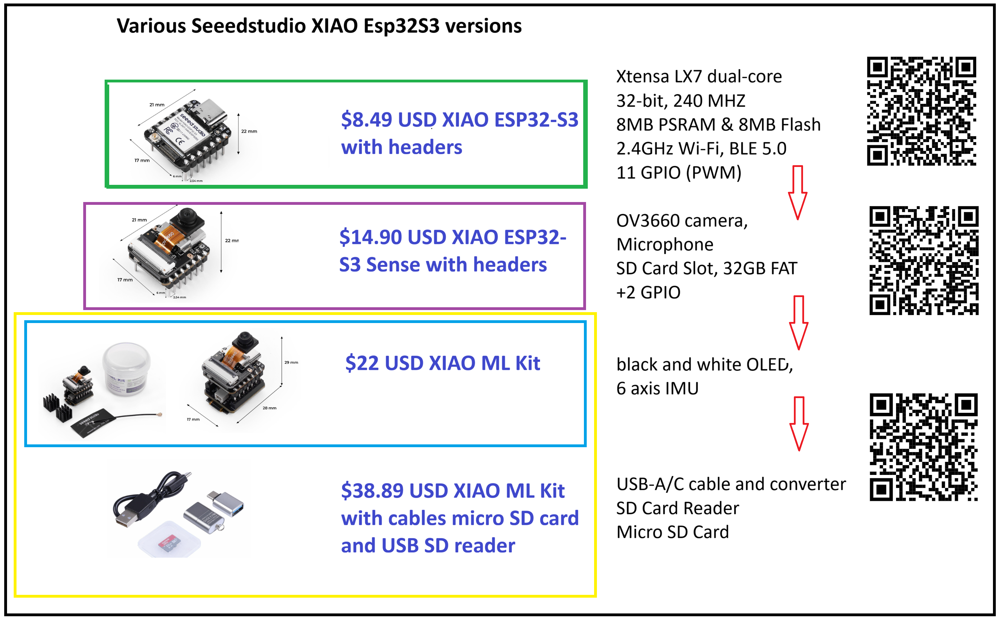
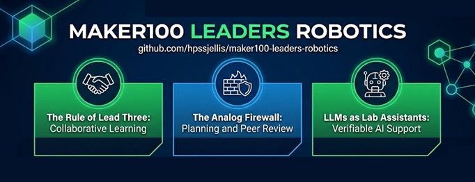
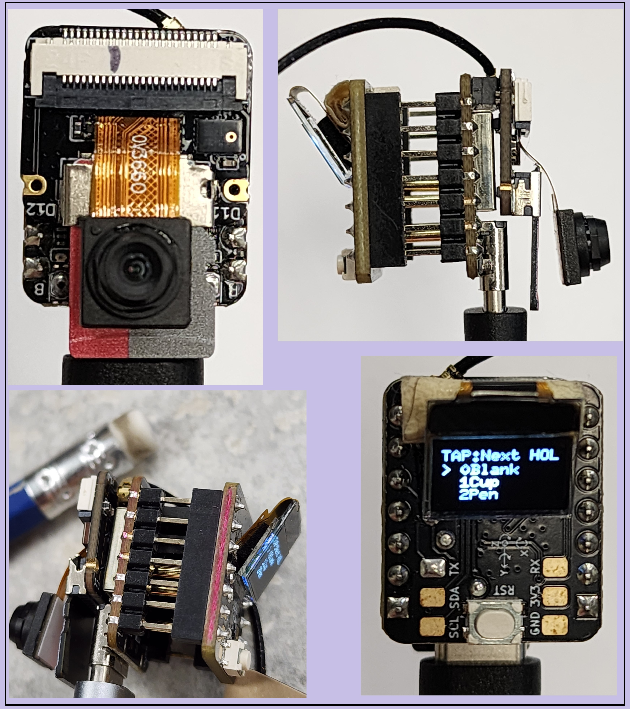
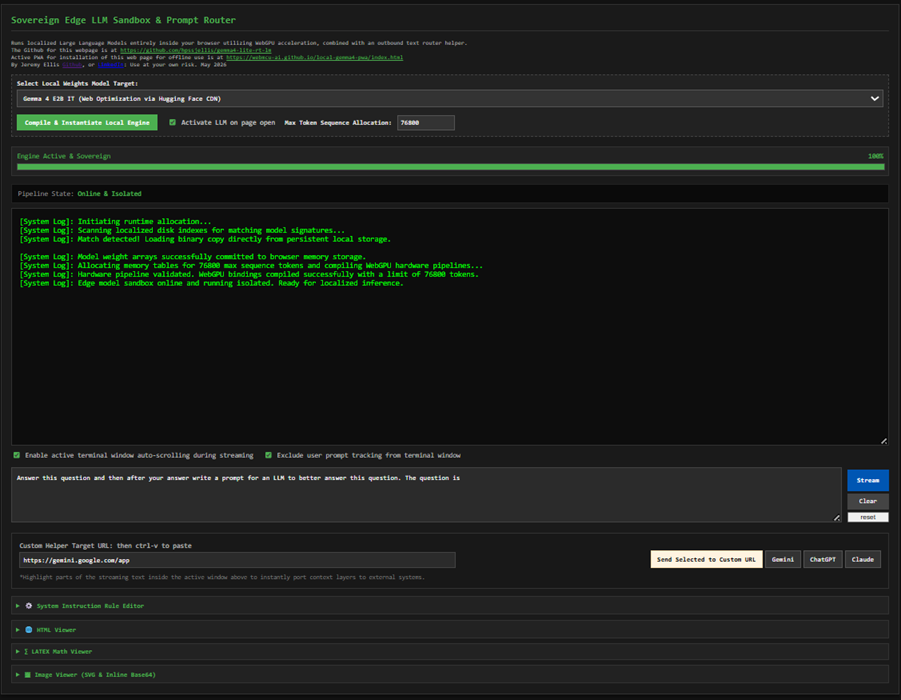
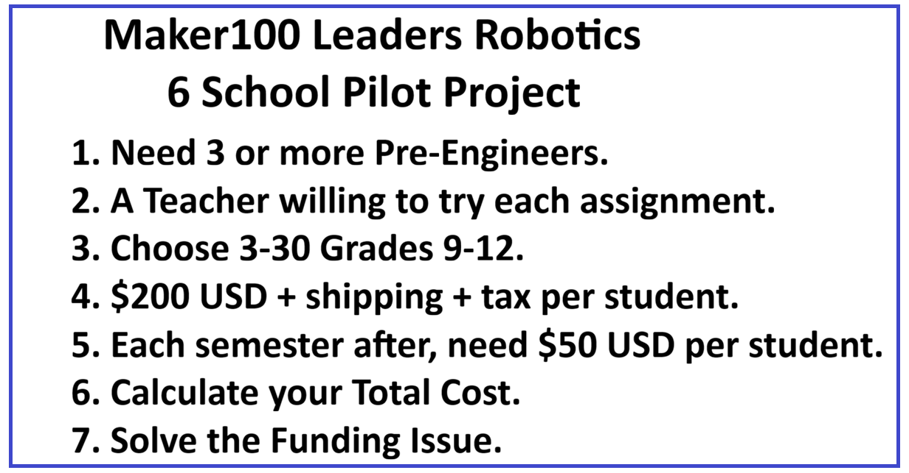
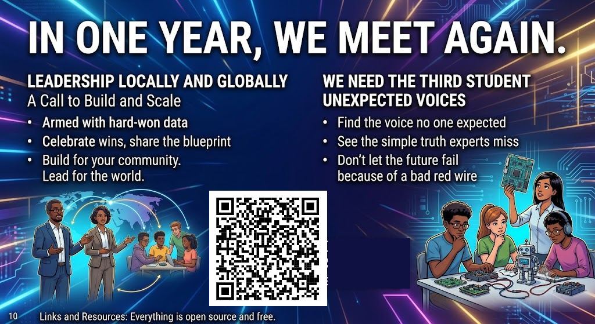

Maker100 Leaders Robotics. A Global Six-School Pilot, By Jeremy Ellis
1
The Red Wire Story
Don't let the future fail because of a bad red wire.

A three-person team was falling apart over their final project.
A robot arm with IoT sensors and a tiny vision ML loop. The leader was capable. The pre-engineer was meticulous. And yet the system kept failing, working one moment, collapsing the next. Beside them stood the third student. Quiet. Barely passing the course. After another failure, he spoke up gently: "What if the red wire isn't working?" The leader froze. You could feel the tension. The pre-engineer sighed, then said: "That is an easy test." And swapped the red wire to a different red breadboard wire. Instantly, the entire robot came alive. Smooth. Stable. Perfect. The breakthrough didn't come from expertise. It came from inclusion. From giving space to the voice no one expected to matter. Now imagine a world where only a handful of powerful cloud companies get to decide how we solve society's hardest problems. That's a world with only two students at the table. We need the third student. We need the unexpected insight. The simple truth that experts miss. Democratizing AI isn't optional. It's how we keep the future from failing because of a bad VCC line. And for the record, in my class we never throw away equipment students call broken. But that day, we held a small ceremony... and tossed that little red wire straight into the garbage.2
Course Pilot, Six Schools, Six Countries, $200 per student.
Maker100 Leaders: Robotics, ML & IoT, A Global Pilot

6 Schools from 6 different countries. 3 to 30 students per school. Approximately $200 per student hardware cost.
I am here today with a very specific mission. I am looking for exactly six schools, from six different countries, to pilot the Maker100 Leaders Robotics course for the upcoming academic year. Three to thirty students per school. Let's talk numbers upfront so there are no surprises: the hardware cost is roughly $200 USD per student plus tax and shipping for the XIAO ML kit and all supporting components, purchased by your school directly from online suppliers. I make absolutely nothing from the hardware. But I only support the platform I have stress-tested for years in my own classroom. We are here to launch this pilot, gather hard undeniable student data over one full year, and stand back on a stage like this next year to unlock the significant financial support needed to scale this globally. If you want your school or organization to be one of those six pioneers, watch closely.3
Who I Am And Why I'm Here
I don't teach leaders. I put students in situations where they discover they already are one.

I am Jeremy Ellis. I have taught technology for over 30 years in British Columbia, Canada.
I founded the GitHub organization webmcu-ai, a framework for fully on-device machine learning training. I help co-chair the AiEng4D Show and Tell, where Global South university students present their TinyML and Edge AI projects online. Today I am presenting a pilot project to bring my student-led robotics course to the Global South, and I am asking the student leaders in this room to help make it happen. Students today are looking at an uncertain future. They see artificial intelligence changing every industry. They have a choice: ride along with technology built by others, or learn how it works and become the people who build what comes next. Throughout my career I have watched that choice play out in classrooms. And I've learned something important. I don't teach pre-engineers, students who build things and love the complexity of math and physics. They teach me. This course is not just for pre-engineers, but anyone willing to solve problems, like leaders, makers and pre-engineers. I also don't teach leaders. Leaders are students who look outward while digging deeper. This course puts students into situations where they grow their leadership skills. 4
The Course: Maker100 Leaders Robotics.
The course is at github.com/hpssjellis/maker100-leaders-robotics open source, free, and can be updated.

This is not an easy course. That is the whole point.
Students solve 40 to 60 robotics, machine learning, sensor, actuator, and IoT challenges, and then teach others their solutions. No full lectures. Students or the teacher record all 60-plus assignments on a public or private chart, solved in any order. The Rule of Lead Three: If you are the first person to solve an assignment, you must teach three others. Those three are responsible for helping three more. The maximum mark of 90% gets closer to 100% as that classroom tone of collaboration increases. I am completely comfortable with ten students earning 100 percent. It hurts no one, and it massively improves classroom tone, communication, confidence, and joy. The Analog Firewall: The class always starts here. Code is summarized on paper before loading onto a microcontroller. Circuit diagrams are drawn by hand and checked by another student before wiring. Power is connected only after a second check. Why? Because thinking before acting is a professional habit. And because a hardware failure caught on paper costs nothing. A hardware failure caught after a short circuit has a real cost. LLMs as lab assistants: Students learn to ask AI for help, understand the answer, verify it, improve it, and eventually build their own tools. AI becomes a lab assistant, debugger and a tutor, not a replacement for understanding. Once assignments are complete, students do Level 1 and Level 2 final projects. Level 1 is a course pass: single sensor, MCU, single actuator. Level 2 earns the higher mark: multiple sensors/actuators with ML and or IoT. Multiple people are expected to reach the top grade. Group work is optional, often teacher assigned. For most of the course students work collaboratively but on their own hardware, to avoid the group labour trap problem: where one student codes and the other student wires the board. Our students learn the entire pipeline. In 2026 my students completed 45 assignments before starting their final projects. I completed 8 more assignments for the top students to finish after their projects were done. 5
On-Device Machine Learning
Demo WebMCU-AI: The Full Machine Learning Pipeline on a $8-$22 USD Microcontroller

A common industrial TinyML workflow is to collect data, train in the cloud, and deploy a compressed model back to an edge device.
The traditional TinyML workflow is still an important part of this course. Students use tools like Edge Impulse and SenseCraft to experience the industry approach: collecting data, training models, and deploying inference. Those tools are powerful because they let students build useful systems quickly. Then we ask a deeper question: what happens if we remove the black box and let students build the pipeline themselves on the microcontroller? Many would say that's impossible. TensorFlow Lite is too large, the hardware too constrained. But I wanted to understand it from first principles. With the help of LLMs, I built the complete training and inference pipeline from the mathematical foundations up, directly on the XIAO ML Kit. No TensorFlow. No hidden training service. Students can see the whole process: energy use, data collection, floating-point calculations, backpropagation, optimization, and inference. I was inspired by Vijay Reddi's tinyTorch work and mlsysbook.ai, which showed that students could understand machine learning by building the pieces themselves. I adapted that philosophy into Arduino-compatible code. ArXiv Papers: 2604.23012 & 2604.22834 The XIAO ML Kit is built around the Seeed Studio XIAO ESP32S3 Sense, a microcontroller that costs under $15 USD. That price matters. A school can equip a classroom without a massive grant. A student can experiment. A teacher can replace broken parts. We have working pipelines for:- Vision classification
- Vision object detection FOMO (with XY coordinates)
- Anomaly detection (Difference measure)
- Sound classification
- Motion classification
- Regression Inference (size or distance)
6
WebSerial Vision Classification
Demo: WebSerial Vision Classification

▶
7
Local AI and Why It Matters.
Teenagers are already using AI assistants. The question is whether they understand these tools, or become dependent on them.

Local LLM Demo: Gemma 2B and 12B via PWA
Why not load an LLM locally using an installable webpage, a Progressive Web App? A student computer becomes a private AI lab assistant without sending every question and every piece of student data somewhere else. Demo: Local Gemma 2B and 12B via PWA Privacy alone makes this worth doing. But the deeper idea is this: If students only experience AI through a few enormous platforms, they become consumers of tools they do not understand. If we can put AI tools into classrooms everywhere, more students can become creators. 8
Ollama and Gemma4 from PWA webpage
Demo: Ollama from PWA webpage. Needs Ollama.com installed

▶
Demo: Gemma4 from PWA webpage only

▶
9
What I Learned From Stepping Back.
In 30 years of teaching I had never had a student win a large scholarship. Then I took a semester off.
The most important thing I ever did was get out of the way.
Last year I took a semester off. I was not there to quickly solve my students' problems. They struggled, but they learned deeper. From that class, two students received over $100,000 in Canadian scholarships: a grade 12 girl won the Canadian Schulich Scholarship, and a grade 11 boy won the Canadian Loran Scholarship. That taught me something important. I am not the center of this course. The hardware, the curriculum, the Lead Three, the Analog Firewall, and the classroom culture, those are the important parts. Remember: no strain, no gain: cognitive, social, emotional, or physical. Those scholarship students were already impressive. I am not claiming this course created their success. What surprised me was seeing what happened when the teacher stopped being the center of the learning. I stepped back so my students could step up. And when they did, they won major national scholarships. This course proves how capable you already are when adults get out of your way. 10
11
Teachers matter.
Just differently in year one.

The teacher steps back so students can step up, but they never disappear.
In year one, the teacher is a technology counsellor and an emotional counsellor. They keep circuits safe and they name the struggle as growth. Deep hardware expertise is not required on day one. That is intentional. Microcontrollers are relevant for one to six years before something better arrives. Heavy teacher training tied to specific hardware does not survive a hardware generation. The course structure does. By year two, the teacher has lived it once. They know exactly where students get stuck. That becomes five-minute micro-lectures placed precisely at the real pain points, not lectures delivered before anyone needs them. Students who solve hard problems without being rescued build confidence that is portable. That is the whole point. 12
The Pilot Proposal, Your Leadership Challenge
Maker100 Leaders Robotics needs Leaders

You are in one of the best places on the planet to do that.
Here is what you need: At least three pre-engineers willing to work hard3 to 30 students, grades 9 to 12
~$200 USD per student + tax + shipping to start; ~$50 USD each year or semester for replacement parts.
Yes, we break things. That is part of the learning.
Access to a computer lab, ideally with a 3D printer
A teacher sponsor willing to be a co-learner, not a lecturer, someone ready to tackle these challenges side-by-side with you.
If your teacher is willing to learn and complete the work, I will support that class three times during the first course: at the start for safety, in the middle when students hit problems they cannot solve alone, and near the end for the most challenging Level 2 assignments. If your instructor is an Arduino wizard and already has an EdgeImpulse login, they may want to do the course without contact, and connect next year.
Calculate your student count, calculate your total cost, and solve the funding problem. That is not my job. But knowing where the money comes from is your first real leadership challenge.
Actual Hardware dynamic price list < a href="https://hpssjellis.github.io/maker100-leaders-robotics/price-list-2026.html">https://hpssjellis.github.io/maker100-leaders-robotics/price-list-2026.html
13
In Closing
In one year, we meet again.

Leadership locally and Globally
In one year, we meet again. Some schools will have tried. All will have struggled. Some students will have created things none of us expected. The question is simple: Which leaders will stand here, armed with hard-won data, to tell us what their class built? The schools that succeed here won't just celebrate their own wins, they will become the blueprint to scale this globally to raise the funds for those who couldn't start today. This pilot is not a rollout. It is a measurement phase. Six schools will show us what works, what breaks, and what must change before scaling. First, you build for your community. Then, you lead for the world. That question is not for me. It is for the leaders in this room. We need the third student at the table. We need the voice no one expected. We need the person who sees the simple truth the experts miss. I am not arguing that everyone becomes an AI engineer. I am arguing that everyone deserves enough understanding to participate in the future. Don't let the future fail because of a bad red wire. Thank you. 14
Links and Resources
Everything is open source and free.
QR code to this presentation:
All links
| Resource | Link / Details | Comments |
|---|---|---|
| Author | Jeremy Ellis LinkedIn Profile | |
| GitHub Profile | github.com/hpssjellis | |
| On-Device webmcu-ai | github.com/webmcu-ai | arXiv Papers: 2604.23012 & 2604.22834 |
| WebSerial Vision Demo | webmcu-vision-pwa | On-device and webSerial Vision ML Training demo webpage and PWA |
| The Course | maker100-leaders-robotics | This is the course the students work through |
| The Curriculum | maker100-curriculum | This is the generic curriculum on Github |
| Hardware Price List | Hardware price-list-2026 | The bare essential hardware. |
| Local LLM PWA Small ~2GB | Gemma4:e2B PWA | Running as webpage PWAs |
| Local LLM PWA Large ~7GB | Ollama Gemma4:12B PWA | Needs Ollama installed |